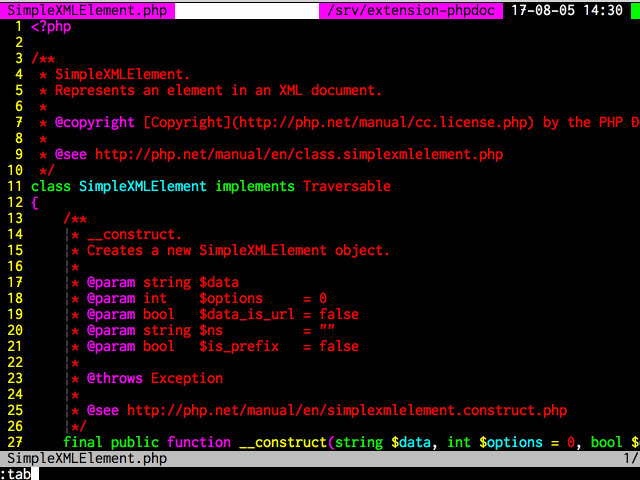

<!doctype html>
<html lang="ja">
    <head>
        <title>Vim for PHP</title>
        <meta charset="utf-8" />
        <meta name="description"                           content="Vim for PHP" />
        <meta name="author"                                content="KazuakiM" />
        <meta name="apple-mobile-web-app-capable"          content="yes" />
        <meta name="apple-mobile-web-app-status-bar-style" content="black-translucent" />
        <meta name="viewport"                              content="width=device-width, initial-scale=1.0, maximum-scale=1.0, user-scalable=no, minimal-ui" />

        <link rel="stylesheet" href="css/reveal.css" />
        <link rel="stylesheet" href="css/theme/black.css" id="theme" />
        <link rel="stylesheet" href="lib/css/zenburn.css" />             <!-- Code syntax highlighting -->

        <!-- Printing and PDF exports -->
        <script>
            var link  = document.createElement( 'link' );
            link.rel  = 'stylesheet';
            link.type = 'text/css';
            link.href = window.location.search.match( /print-pdf/gi ) ? 'css/print/pdf.css' : 'css/print/paper.css';
            document.getElementsByTagName( 'head' )[0].appendChild( link );
        </script>

        <!--[if lt IE 9]>
        <script src="lib/js/html5shiv.js"></script>
        <![endif]-->

        <!-- original -->
        <script src="https://ajax.googleapis.com/ajax/libs/jquery/2.1.3/jquery.min.js"></script>
        <style type="text/css">
            .reveal .slides { text-align: left;  }
            p.center {        text-align: center;}
            font.gray {       color: gray; font-size: 15px;}
        </style>
    </head>
    <body>
        <!-- Any section element inside of this container is displayed as a slide -->
        <div class="reveal"><div class="slides">
            <section data-markdown data-separator="\n---\n$" data-vertical="\n--\n">
                <script type="text/template">
# Vim for PHP  
PHP BLT #8

---

## 自己紹介
- - -
* Name: Kazuaki Mabuchi
* Twitter: [KazuakiM@NanohaAsOnKai](https://twitter.com/NanohaAsOnKai)
* GitHub: [KazuakiM](https://github.com/KazuakiM)
* Jobs: Web application engineer
* Cluster: PHP, JavaScript, MySQL, Vim
* Vim: 2013/08 〜
* PHPStorm: ライセンス保持
* kwsk: [ここをクリック](https://kazuakim.github.io/aboutme/)

---

# Vimとは

---

## Vimとは
- - -
<br />
<br />
<br />
```
Vimはオランダ人のプログラマーBram MoolenaarによってAmiga向けに開発された。
のちにWindowsを含むさまざまな環境に移植され、特にUnix系OSではEmacsと並んで
広く使用されているテキストエディタ
                                                            Wikiperia参照
```
---

# Install方法

---

## Install方法
- - -
* Windows

 [KaoriYa-Vim](http://www.kaoriya.net/software/vim/)
* Linux

 ソース([GitHub](https://github.com/vim/vim))からのコンパイル  
 ディストリビューション
* Mac

 [MacVim - アプリ](https://github.com/macvim-dev/macvim/releases)  
 [MacVim - homebrew](https://github.com/macvim-dev/homebrew-macvim)

---

# PHPにはPHPStorm?

---

## PHPにはPHPStorm?
- - -
<br />
<br />
<br />
<br />
Yes. PHPStorm もいいよね。  
でも、Vimが好きなんだ。

---

## Vimの機能を紹介

---

## タブ・画面分割
- - -



---

## タブ・ステータスバー
- - -


---

## タブ・ステータスバー
- - -


---

## ファイラー
- - -
[NERDTree](https://github.com/scrooloose/nerdtree)、[Vimfiler](https://github.com/Shougo/vimfiler.vim)、Netrw (default)とかが有名です。


---

## 一般的なエディタに出来る事は  
## Vimも出来ます。

---

## ただ、
## Vimにも欠点が...

---

## Ice Break:Vimの欠点
- - -
<br />
<br />
マウスを使わないがあまりに  
マウスを使う機能が億劫になります。

---

## Ice Break:Vimの欠点
- - -
<br />
<br />
Macでフルスクリーンにすると  
時刻と充電率がわからなくなる問題
<br />
<br />
<br />
<p class="center">当事者的にはすごく深刻でした。</p>

---

## Ice Break:Vimの欠点
- - -

その結果がこれ。


---

## Ice Break  以上

---

## grep
- - -
vimgrep、外部ツール(ag,grep,etc)をサポートしてます。


---

## grep
- - -
grep結果からの置換もサポート。


---

## タグジャンプ
- - -
ctags系サポートしています。


---

余談ですが、  
Universal Ctagsのメンテナになりました。

---

## 補完
- - -
VimにはOmni補完がデフォルトで備わっています。  
Pluginを入れるのに抵抗がある方でも安心です。

ここではリッチな補完を紹介します。

* [neocomplete](https://github.com/Shougo/neocomplete.vim)
* [YouCompleteMe](https://github.com/Valloric/YouCompleteMe)

---

## スニペット
- - -
スニペットとは
```
スニペット(英語:snippet)とは、「断片」という意味である。情報処理の分野ではよく使う
短いプログラムコードを統合開発環境から呼び出す機能の事である。
また、呼び出される短いコードの事をスニペットと呼ぶ場合もある。
                                                                     Wikiperia参照
```

要するに定型文を利用する事で、  
有意義に開発を進めましょうという事です。

主にこの2つが有名です。

* [UltiSnips](https://github.com/SirVer/ultisnips)
* [neosnippet](https://github.com/Shougo/neosnippet.vim)

---

## 補完・スニペット
- - -
スニペットに全てを委ねるのが楽ですよね。


---

## その他
- - -
* プログラム実行
* テストコード実行
* シンタックスチェック
* etc

---

## もしかして：PHP関係ない...?
- - -
<br />
<br />
<br />
設定さえしっかり行えば、  
だいたいの言語で活躍します。

---

## [広告]PHPについて
- - -
<br />
<br />
<br />
詳細は[VimでPHP開発環境を作成](http://qiita.com/NanohaAsOnKai/items/0188fb3b60e8a79656a0) で

---

## 最近のVim
- - -
<br />
<br />
<br />
ターミナルモードで盛り上がっています。  
時間がありましたら、デモします。

---

## まとめ
- - -

* 最近のVimはすごい!!

 機会があったら積極的に触っていきましょう。

* 開発環境は好きなものを使うのが１番

---

## <p class="center">ご清聴ありがとうございました。</p>
                </script>
            </section>
        </div></div>
        <script src="lib/js/head.min.js"></script>
        <script src="js/reveal.js"></script>
        <script>
            // Full list of configuration options available at:
            // https://github.com/hakimel/reveal.js#configuration
            Reveal.initialize({
                controls:    false,
                progress:    false,
                slideNumber: true,
                history:     true,
                loop:        false,
                //autoSlide: 15000,
                transition:  'fade', // none/fade/slide/convex/concave/zoom

                // Optional reveal.js plugins
                dependencies: [
                    { src: 'lib/js/classList.js',                        condition: function() { return !document.body.classList; } },
                    { src: 'plugin/markdown/marked.js',                  condition: function() { return !!document.querySelector( '[data-markdown]' ); } },
                    { src: 'plugin/markdown/markdown.js',                condition: function() { return !!document.querySelector( '[data-markdown]' ); } },
                    { src: 'plugin/highlight/highlight.js', async: true, condition: function() { return !!document.querySelector( 'pre code' ); }, callback: function() { hljs.initHighlightingOnLoad(); } },
                    { src: 'plugin/zoom-js/zoom.js',        async: true },
                    { src: 'plugin/notes/notes.js',         async: true }]});
            Reveal.addEventListener('slidechanged', function(event) {
                //Center
                if (-1 < $.inArray(Reveal.getState().indexh, [0, 2, 4, 5, 6, 8, 10, 13, 14, 18, 22, 31])) {
                    Reveal.configure({ center: true });
                } else {
                    Reveal.configure({ center: false });
                }
            });
        </script>
    </body>
</html>
<!--

## 備忘:Vimヘルプドキュメント
- - -
Vimのヘルプはデフォルト英語です。
日本語のヘルプがよい方は[vimdoc-ja](https://github.com/vim-jp/vimdoc-ja)を入れる事で日本語に対応します。
<br />
<br />
## 備忘:PHPマニュアル
- - -
[vim-ref](https://github.com/thinca/vim-ref)を使う事でVim上でPHPのマニュアルを手軽に参照できます。
-->
